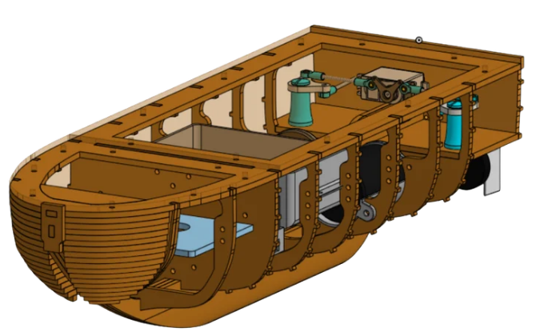
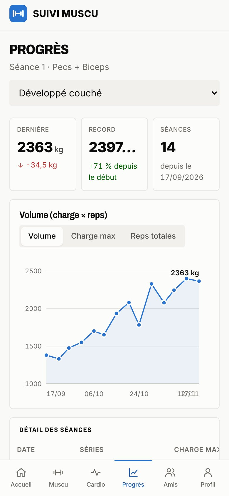
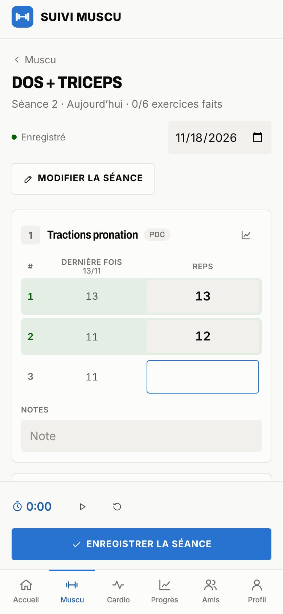

Étudiant en 4ᵉ année à l'ICAM Toulouse, passionné par l'électronique, l'informatique et la mécanique. Je conçois des solutions concrètes pour l'industrie, de la carte embarquée à l'application web, en passant par le terrain.
Mon parcours en quelques lignes.
Je suis en 4ᵉ année du cycle ingénieur de l'ICAM Toulouse. La formation généraliste m'a donné des bases en mécanique, électronique, informatique, thermofluides et gestion de projet.
J'aime les projets où l'on passe du plan à l'objet réel : un bateau autonome conçu et fabriqué en équipe, une application qui remplace les fiches papier d'un atelier. Mon parcours entre Toulouse, Meknès et Kochi m'a appris à m'adapter vite.
Trois stages, du terrain à la digitalisation d'un atelier.
Un projet d'école sur deux ans et un projet personnel.

Coque conçue en CAO et fabriquée en bois, électronique ESP32 et FPGA, autopilote GPS et site de pilotage. Trois courses, trois victoires.
Voir le projet

Application de suivi d'entraînement installable sur téléphone et utilisable sans réseau.
Voir le projetCe que j'utilise en stage et en projet.
De Colomiers à Kochi.
Rajagiri School of Engineering & Technology, Kochi, Inde. Programme de 11 mois en ingénierie.
En coursICAM Toulouse. Formation généraliste : mécanique, électronique, informatique, thermofluides, lean, gestion de projet.
Lycée International Victor Hugo, Colomiers. Mathématiques, physique-chimie, sciences de l'ingénieur.
En recherche d'alternance pour septembre 2027. Je suis en Inde jusqu'en mai 2027 : les entretiens en visio me conviennent très bien.